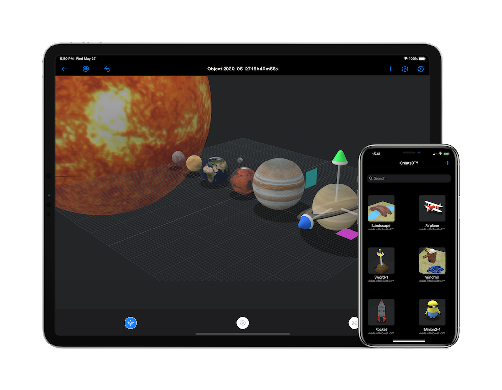
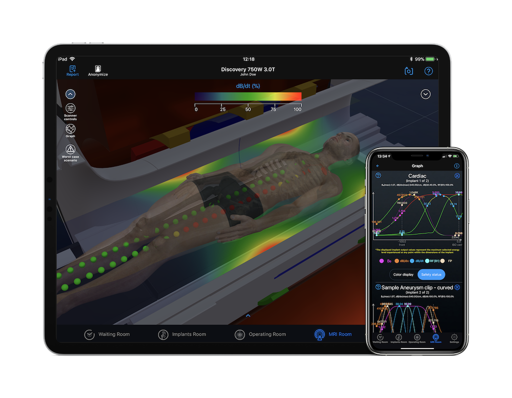
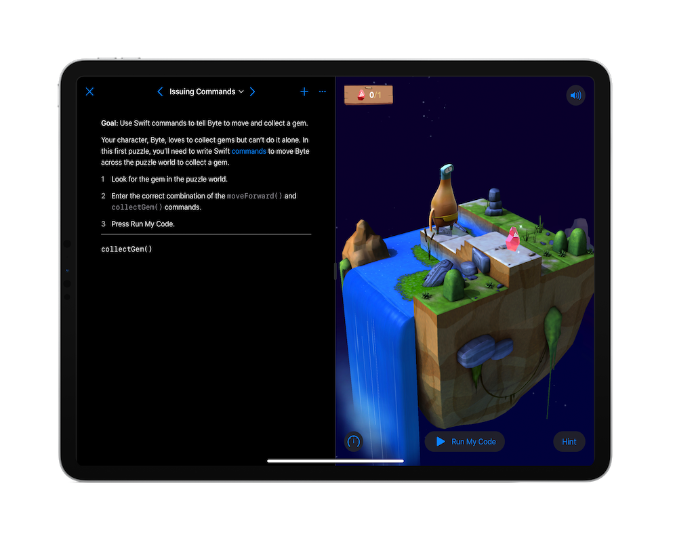

Selected work
Ideas, made real.
3D design, augmented reality and machine learning.
A closer look at what we build.

Project 01
Creat3D™
This application was developed as a mini CAD 3D editor for mobile devices. Users can import any primitive shapes (e.g. cube, sphere, cylinder etc), combine and subtract them to create complex 3D shapes.
Users can also customize the appearance (textures) of the created objects by applying different materials from the library.
Technologies:
- UIKit
- SceneKit
- ARKit
- StoreKit

Project 02
MagnetVision™
A complex application that simulates the interaction of the energy fields in an MRI scanner and implants/objects/devices that may be implanted in a patient.
The outcome is a 3D visual representation of all interactions in a simple green/yellow/red color coded output, signifying the severity of the fields on the implant/object/device.
Technologies:
- UIKit
- SceneKit
- ARKit
- SwiftUI
Project 03
Aesthetics PoC
An excellent demonstration for the capabilities of modern devices. In this Proof of Concept (PoC) we demonstrate “real time” and “on the fly” mesh manipulation.
Using technologies that we developed we can rig, weight paint and animate a mesh on the fly without any prior manipulation of the mesh.
This is a very powerful technology that can have many use cases especially in the medical industry but of course not limited.
Technologies:
- UIKit
- SceneKit
- ARKit
- Proprietary MEDIWARE technologies

Project 04
Swift Playgrounds app
“Swift Playgrounds is a revolutionary app for iPad that makes learning Swift interactive and fun.”
In this project we created a Swift Playground app* that allowed the users to code and interact with a real toy via Bluetooth. The users would explore an “island” to discover clues in Augmented Reality and in 3D.
Technologies:
- UIKit
- SceneKit
- ARKit
- Swift Playgrounds Template
*Please note the screenshot is not from the actual application.
Project 05
Machine Learning Project
This was an internal project to test the power of Machine Learning (ML) and the applications in Radiology.
We trained an ML model to identify normal vs abnormal chest X-rays. The data set was split into two classes (normal, abnormal) and the model was trained (took about 3 hours for a total of 10K images). The results are really promising even with the limited flexibility that CoreML is offering. For a real-life project we would probably use TensorFlow.
Technologies:
- UIKit
- CoreML
- Create ML
- Proprietary iCat technologies